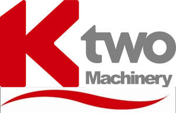

Trade Mark Journal No.2025/035 29 August 2025
UK00004231795 10 July 2025 (7,12,16,18,21,24,25)

- Class 7
- Agricultural machines; construction machines; front loaders for tractors, feeders [part of machines]; feeders for machines; block cutters [machines]; pumps included in Class 7; sweepers included in Class 7; muck spreaders (machines); muck spreaders; parts and fittings for all the aforesaid goods.
- Class 12
- Trailers; semi-trailers; tractor trailers; transport trailers; equipment trailers; vehicle trailers; road trailers; canopies for trailers; drawbars for trailers; tow bars for trailers; couplings (non-electric -) for towing trailers; tarpaulins adapted [shaped] for use with vehicular trailers.
- Class 16
- Printed matter, stationery and educational supplies; journals; calendars; writing paper; pencil cases; desk tidies; adhesives for stationery or household purposes; adhesive tape for household or stationery purposes; erasers; rubbers; paper, card, cardboard; pads of paper; note pads; notebooks; calendar planners; file folders; lever arch files; folders; envelopes; paper binders; binders; binder clips; portfolios; diaries; filofaxes; personal organisers; pens; pencils; highlighters; dry erase markers, paper clips; glue; paper staples; office desk accessories, namely, desk file trays, correction tape, desk pads, desk sets, file folders, hanging files, and holders for pens and pencils; desktop document racks and organizers; non electric staplers; paper cutters; stationery; office requisites; hole punchers; pencil sharpeners; adhesive tape dispensers for household and commercial use; rubber bands; ink cartridges for pens; Paper and cardboard, not included in other classes; printed matter; bookbinding material; photographs; adhesives for stationery or household purposes; artists' materials; paint brushes; typewriters and office requisites (except furniture); instructional and teaching material (except apparatus); plastic material for packaging (not included in other classes); printers' type; printing blocks; printed matter and paper goods, namely, books featuring characters from animated, action adventure, comedy and/or drama features, comic books, children's books, magazines featuring characters from animated, action, adventure, comedy and/or drama features, colouring books, children's activity books; stationery, writing paper, envelopes, notebooks, diaries, note cards, greeting cards, trading cards; lithographs; pens, pencils, cases therefor, erasers, crayons, markers, coloured pencils, painting sets, chalk and chalkboards; decals, heat transfers; posters; mounted and/or unmounted photographs; book covers, book marks; calendars, gift wrapping paper; paper party decorations, namely, paper napkins, paper doilies, paper place mats, crepe paper, invitations, paper table cloths, paper cake decorations; printed transfers for embroidery or fabric appliques; printed patterns for costumes, pyjamas, sweatshirts and t- shirts; notebook holders; carrier bags; chequebook holders.
- Class 18
- Trunks and travelling bags; travel cases; luggage; suitcases; holdalls; portmanteaux; valises; bags; handbags; shoulder bags; toilet bags; rucksacks; backpacks; bumbags; sports bags; casual bags; briefcases; attaché cases; music cases; satchels; beauty cases; carriers for suits, for shirts and for dresses; tie cases; notecases; document cases and holders; credit card cases and holders; wallets; purses; umbrellas; parasols; walking sticks; shooting sticks; children's reins; parts and fittings for all the aforesaid goods.
- Class 21
- Household utensils and containers; kitchen utensils and containers; articles for cleaning purposes; steelwool; unworked or semi-worked glass; glassware, porcelain and earthenware; cruet sets; pepper mills; salt mills; toast racks; lunch boxes; flasks; picnic baskets (fitted); insulated bottles; insulated flasks; portable coolers and portable insulated coolers; thermally insulated containers all for carrying or storing food and/or drink; brushes; combs; toothbrushes; cosmetic utensils; trouser presses; tie presses; shoe-trees (stretchers); shaving brush stands; ironing boards; ironing board covers; cages for household pets; parts and fittings for all the aforesaid goods.
- Class 24
- Textiles and textile goods, not included in other classes; bed and table covers; travelling rugs; lap rugs; towels; bed linens, namely, blankets, quilts, canopies, bed pads, bedspreads, bed sheets, pillow cases, comforters, duvet covers, mattress covers, dust ruffles, mosquito nets, pillow shams and bed spreads; cloth; fabric; table covers and table linen; textile and fabric place mats; napkins, serviettes and table runners; kitchen linens, namely, cloth doilies, cloth napkins, fabric table cloths, kitchen towels, fabric place mats, washing mitts, fabric table runners, cloth coasters; curtains; draperies; curtain holders of cloth; banners; handkerchiefs of textile; bath linens, namely, bath towels and wash cloths; household linen; mats of linen; coverings of textile and of plastic for furniture; covers for toilet lids of fabric; covers for cushions; loose covers for furniture; textile wall hangings; shower curtains; cotton, polyester and/or nylon fabric; fabric of imitation animal skins; upholstery fabrics; lingerie fabric; handkerchiefs; golf towels.
- Class 25
- Clothing, footwear and headgear; clothing for men, women and children, namely, shirts, t-shirts, sweatshirts, jogging suits, trousers, jeans, pants, shorts, tank tops, rainwear, cloth baby bibs, skirts, blouses, dresses, suspenders, sweaters, jackets, coats, raincoats, snow suits, ties, robes, hats, caps, sunvisors, belts, scarves, sleepwear, pyjamas, lingerie, underwear, boots, shoes, sneakers, sandals, booties, slipper socks, swimwear; Coats, Jackets, Gilets and Bodywarmers, Sweatshirts, Hoodies, Half-zips, Trousers, T-shirts, Polo- shirts, Woolly hats, Cloth hats, Baseball caps, Socks, Shoes, Boots, Overalls, Underwear, Swimwear, Pyjamas, Rain jackets; coveralls; boiler suits; vests; belts (clothing); shirts and t- shirts; skirts; scarves; jackets; socks and stockings .
REDROCK MACHINERY LIMITED
Representative: Ansons